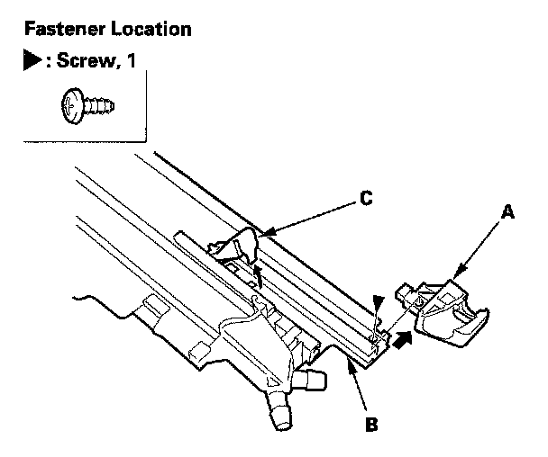

Drain Channel Slider and Cable Assembly
Drain Channel Slider and Cable Assembly Replacement1. Remove the frame
2. Remove these parts from the frame:
- Sunshade
- Moonroof motor
3. Disconnect and remove the rear middle drain tube (A).

4. Put on gloves to protect your hands. Remove the screw securing the sunshade rear stop (A), and remove it from the frame (B). Release the rear hook of the slide stop (C) by pushing it forward, and pivot the stop up.
5. Remove the slide stop (A) and the drain channel slider (B).
6. Pivot the glass bracket (A) down by sliding the link lifter (B) back, then slide the glass bracket back with the link lifter.
7. Slide the glass bracket (A) along with the cable (B) back, then remove them from the frame (C).
8. Install the slider and cable assembly in the reverse order of removal, and note these items:
- Damaged parts should be replaced.
- Apply molybdenum grease to the glass bracket (A) and guide rail portion of the frame (B) indicated by the arrows.
- Before reinstalling the motor, make sure both link lifters are parallel, and in the tilt-up position.
- Before reinstalling the motor, install the frame and glass, then check the opening drag.
- After reinstalling the motor reset the moonroof control unit